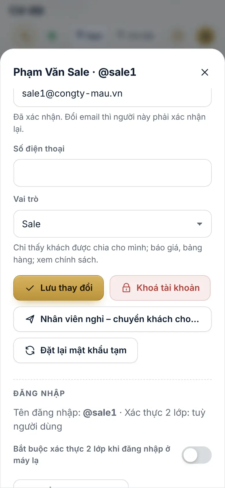
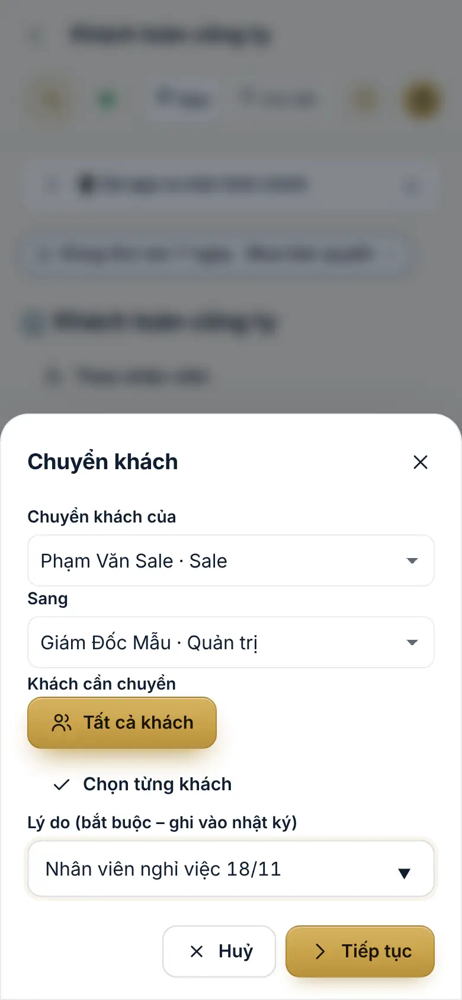
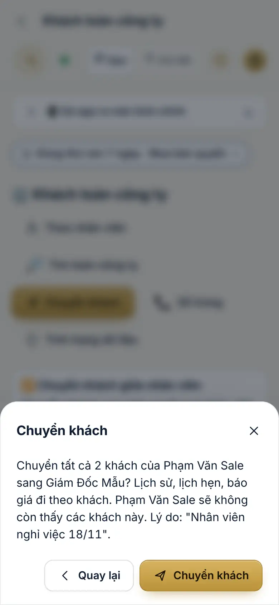
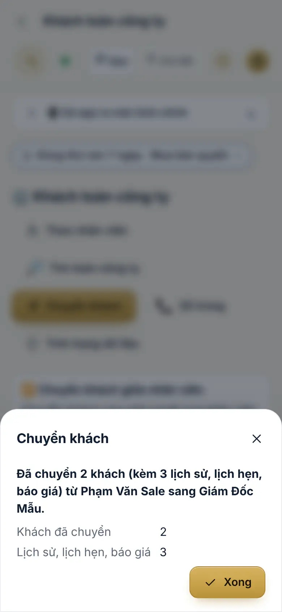

Công ty: chuyển khách khi nhân viên nghỉ
Chuyển toàn bộ (hoặc từng) khách của một người sang người khác. Lịch sử, lịch hẹn, báo giá đi theo khách; người cũ không còn thấy.
Chuyển khách
- Vào Cài đặt › Người dùng, bấm vào tên nhân viên nghỉ → Nhân viên nghỉ – chuyển khách cho ….
(Hoặc Khách › 🏢 Khách toàn công ty › Chuyển khách › Chuyển khách….)

- Chuyển khách của: người nghỉ (mở từ hồ sơ nhân viên thì đã chọn sẵn). Sang: người nhận.
- Chọn Tất cả khách hoặc Chọn từng khách.
- Gõ Lý do (bắt buộc – ghi vào nhật ký), bấm Tiếp tục.

- Đọc lại câu xác nhận, bấm Chuyển khách.

- App báo đã chuyển bao nhiêu khách và bao nhiêu lịch sử/lịch hẹn/báo giá. Bấm Xong.

Khoá tài khoản người nghỉ
Trong hồ sơ nhân viên (bước 1), bấm Khoá tài khoản. Ở mục THIẾT BỊ có thể Thu hồi máy đang đăng nhập. Máy bị mất hoặc nhân viên không trả máy: tick Máy bị mất – xoá dữ liệu trên máy trước khi bấm Thu hồi (không tick thì máy đó đăng xuất nhưng vẫn giữ dữ liệu).
Nên chuyển khách trước, rồi mới khoá.